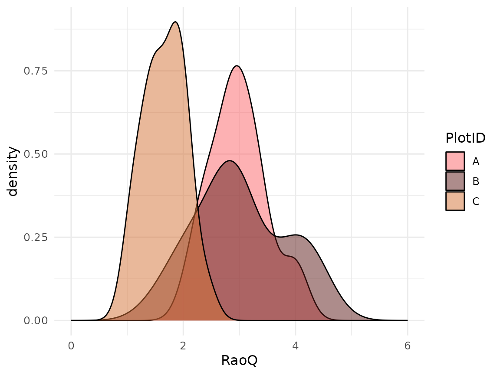
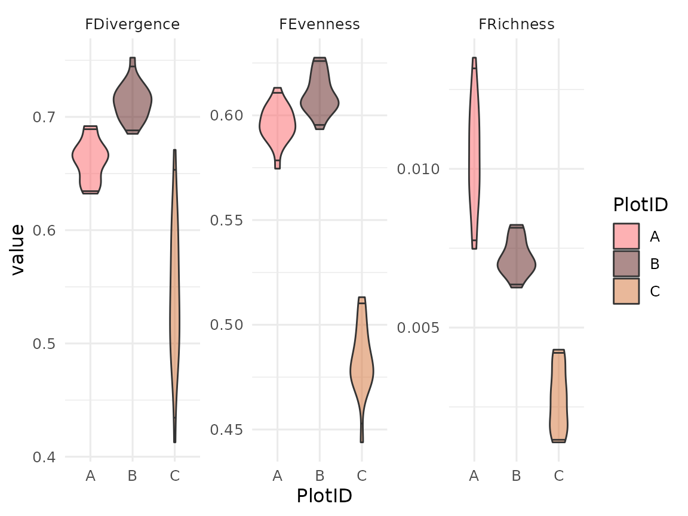

This vignette explains how to use the traitstrap package (Telford et al). For more details on the methods see Maitner et al.
First of all, relax and turn on some music. We have prepared the traitstrap playlist for you!
The aim of traitstrap
Trait distributions can be used to infer the importance of community assembly processes and the role of climate drivers in shaping species and community responses to climate change. Community ecology has typically focused on the mean, however the higher moments (variance, skewness, and kurtosis) of trait distributions can reveal information about the various processes shaping species diversity.

Measuring trait distributions is often difficult and time-consuming as it requires information on measuring trait values of all individuals present. Sampling protocols often limit sampling to a non-representative subset of the community, or rely upon species-level average traits values calculated in other locations or across many locations.
Traditionally the moments of trait distributions have been estimated using weighting approaches that rely on the average traits of species weighted by some measure of abundance within the community. Such community-weighted trait moments methods assume that a species’ trait expression can be adequately represented by the mean, ignoring intraspecific trait variation.
To more accurately estimate local trait distributions, trait sampling should thus occur both across multiple individuals within each species, and across multiple locations or experimental treatments across the extent of the study in order to capture both inter- and intra-specific variability.

Traitstrap is an R package to estimate the moments of community trait distributions using a bootstrapping approach. Further, this package uses a hierarchical sampling design, which allows accounting for incomplete trait collections, traits from different spatial or temporal levels (e.g. local traits vs. databases), taxonomic hierarchies (e.g., species vs genus) and experimental designs (e.g., multiple sites, or treated vs. control sampling units).
The package has three main functions:
- trait filling function which allows to account for intraspecific trait variation and hierarchical sampling design.
- a resample method using bootstrapping (parametric or nonparametric method) to calculate community weighted mean and happy moments (variance, skewness and kurtosis).
- a summary function that summarizes the trait moments and calculates confidence intervals.
Note that for this tutorial we are calling the mean and the higher moments the happy moments :-)
The data
For this vignette we will use part of a vascular plant dataset from two sites near Longyearbyen on Svalbard. The data was collected during the Plant Functional Trait Course in 2018 and contains data on the plant community composition and functional traits. For more details see this GitHub repo
Note that some of the species names have been adapted.
Organize your data
To run traitstrap two datasets are required:
- one dataset with information on abundance (e.g. biomass, size, cover, etc.) of the community, which is used to weight species traits by abundance in the community.
- one dataset with the traits for each species (or as many species and individuals you have data for) in your community.
The datasets need to be organized in a tidy and long format and certain columns (see below) are required, but the naming of these columns are up to the user.
Let us have a look at these datasets in an example.
The community data should have information the abundance of species in the community. This dataset will be used to weigh the traits by species abundance. Note that abundance can also be cover, size, biomass, or something similar.
In this example the contains species names (e.g. Taxon), cover of each species per plot (e.g. Cover) and two columns with information about the hierarchy (i.e. Site and PlotID).
#> # A tibble: 110 × 4
#> Taxon Cover Site PlotID
#> <chr> <dbl> <chr> <chr>
#> 1 alopecurus ovatus 0.5 1 B
#> 2 alopecurus ovatus 1 1 C
#> 3 alopecurus ovatus 1 1 D
#> 4 alopecurus ovatus 2 1 F
#> 5 alopecurus ovatus 0.1 1 G
#> 6 bistorta vigdis 10 1 A
#> 7 bistorta vigdis 25 1 B
#> 8 bistorta vigdis 10 1 C
#> 9 bistorta vigdis 2 1 D
#> 10 bistorta vigdis 1 1 F
#> # … with 100 more rowsThe trait data should contain information about traits and trait values for as many species and individuals in the community data as possible. The data should be organized in the same way as the community data and should have corresponding columns. In this example the trait data contains Taxon, Site and PlotID as well as Trait and Value.
#> # A tibble: 705 × 6
#> Site PlotID Taxon ID Trait Value
#> <chr> <chr> <chr> <chr> <chr> <dbl>
#> 1 1 A saxifraga oppositifolia ANF4320 Plant_Height_cm 2
#> 2 1 A saxifraga oppositifolia ANF4320 Wet_Mass_g 0.000695
#> 3 1 A saxifraga oppositifolia ANF4320 Thickness_mm 0.127
#> 4 1 C bistorta vigdis ARQ4344 Plant_Height_cm 4.2
#> 5 1 C bistorta vigdis ARQ4344 Wet_Mass_g 0.0105
#> 6 1 C bistorta vigdis ARQ4344 Thickness_mm 0.154
#> 7 2 C festuca rubra AMT1545 Plant_Height_cm 7
#> 8 2 C festuca rubra AMT1545 Wet_Mass_g 0.00724
#> 9 2 C festuca rubra AMT1545 Thickness_mm 0.257
#> 10 1 C bistorta vigdis ARP2422 Plant_Height_cm 1
#> # … with 695 more rowsTrait filling
The trait_fill() function uses a hierarchical sampling
design, which allows to account for incomplete trait collections, traits
from different spatial or temporal levels (i.e. local traits
vs. databases), different taxonomic resolution and/or experimental
design.
The first two mandatory arguments in the function are the two
datasets: comm and traits
The next four arguments are also mandatory and refer to specific columns in the trait or community dataset:
-
abundancewhich is the abundance of your species in your community dataset. This can be abundance, cover, biomass, or size, etc. -
taxon_colis the column in your community and trait data that define the species. -
trait_colis the column in your trait data that defines the traits. -
value_colis the column in your trait data that defines the trait values.
All the other arguments are not mandatory.
With scale_hierarchy you can define the levels at which
the traits have been collected and the order of trait filling starting
with the highest level (e.g. global database, regional, site, plot). In
the example below we have the levels Site and
PlotID, starting with the highest level.
The trait_fill() function will choose if available a
trait value from the lowest level, i.e. species X from plot A in site 1.
If no trait value is available from that level (plot A, site 1), it will
other groups in the same level and choose a trait value from species X
from plot B or C at site 1. If there is no trait available, it will move
up the hierarchy to the next level and choose trait values from species
X from other sites (site 2, 3, etc.).
The argument min_n_in_samples allows users to define the
minimum number in samples that are chosen at each level. If the minimum
number is not reached (i.e. there are only 3 trait values at a specific
level), trait values from the next higher level will be filled, to avoid
sampling the same individual several times, which could result in
unrealistic variances. The default minimum number of samples is 5.
In the other_col argument other grouping variables in
the community dataset can be defined and will be kept after the trait
filling.
trait_filling <- trait_fill(
# input data (mandatory)
comm = community,
traits = trait,
# specifies columns in your data (mandatory)
abundance_col = "Cover",
taxon_col = "Taxon",
trait_col = "Trait",
value_col = "Value",
# specifies sampling hierarchy
scale_hierarchy = c("Site", "PlotID"),
# min number of samples
min_n_in_sample = 9
)
trait_filling
#> # A tibble: 4,011 × 13
#> # Groups: global, Site, PlotID, Trait [42]
#> Taxon Cover Site PlotID global sum_a…¹ ID Trait Value n_sam…² weight
#> <chr> <dbl> <chr> <chr> <chr> <dbl> <chr> <chr> <dbl> <int> <dbl>
#> 1 dryas oc… 0.1 1 A global 38.2 ATC4… Plan… 1.3 17 0.00588
#> 2 dryas oc… 0.1 1 A global 38.2 ADC9… Plan… 1.4 17 0.00588
#> 3 dryas oc… 0.1 1 A global 38.2 AVU2… Plan… 1.5 17 0.00588
#> 4 dryas oc… 0.1 1 A global 38.2 AHU1… Plan… 2 17 0.00588
#> 5 dryas oc… 0.1 1 A global 38.2 AHS4… Plan… 2.5 17 0.00588
#> 6 dryas oc… 0.1 1 A global 38.2 AHR0… Plan… 2.4 17 0.00588
#> 7 dryas oc… 0.1 1 A global 38.2 ABE6… Plan… 0.6 17 0.00588
#> 8 dryas oc… 0.1 1 A global 38.2 BUP1… Plan… 2.2 17 0.00588
#> 9 dryas oc… 0.1 1 A global 38.2 ADE9… Plan… 1 17 0.00588
#> 10 dryas oc… 0.1 1 A global 38.2 ACH6… Plan… 3 17 0.00588
#> # … with 4,001 more rows, 2 more variables: level <ord>, max_n_in_sample <int>,
#> # and abbreviated variable names ¹sum_abun, ²n_sampleTraitstrap also allows to include taxonomy and experimental design in the trait filling step.
With the argument taxon_col the taxonomic hierarchy for
sampling can be defined. This means if traits for a specific species are
not available, trait values from the same genus will be used. For this a
list of the taxonomic hierarchy has to be defined (e.g. “Taxon”,
“Genus”). Note that traits from species of the same genus can have very
different traits and it might not be meaningful to use these traits.
Therefore, you should always check the trait distributions for the same
genus before using taxonomic trait filling.
The argument treatment_col allows to incorporate an
experimental design where traits are filled from the same experimental
treatment or the first factor level, which is assumed to be the control.
Therefore, it is important to order the levels of a treatment in the
right order, i.e. the first level has to be the control. The filling
step can be defined at certain level using the
treatment_level argument. Depending on the experimental
design it might make sense to fill traits at a certain level, e.g. block
or site.
Here is an example how to include taxonomy and experimental design in the trait filling function (code not run).
trait_filling2 <- trait_fill(
comm = community,
traits = trait,
abundance_col = "Cover",
# defining taxonomic hierarchy
taxon_col = c("Taxon", "Genus"),
trait_col = "Trait",
value_col = "Value",
scale_hierarchy = c("Site", "PlotID"),
min_n_in_sample = 3,
# specifying experimental design
treatment_col = "Treatment",
treatment_level = "Site",
)Nonparametric bootstrapping
The output of the trait filling function is then used to do a
nonparametric bootstrapping using the
trait_np_bootstrap() function.
Nonparametric bootstrapping is a resampling method to estimate the trait moments. The traits are re-sampled in proportion to their weight in the community (e.g. by the abundance of the species).
The trait values across all individuals in a community are resampled
n times (sample_size; the default is 200) to incorporate
the full spectrum of trait variation, generating n number
(nrep; the default is 100) of trait distributions.
From these trait distributions the happy moments are estimated: mean, variance, skewness and kurtosis.
This function also allows to extract raw distributions by setting the
argument raw = TRUE. The raw data can be useful for
visualizing the trait distributions. If the raw data is extracted,
nrep is forced to 1 to avoid memory issues.
# run nonparametric bootstrapping
np_bootstrapped_moments <- trait_np_bootstrap(
trait_filling,
nrep = 200
)
np_bootstrapped_moments
#> # A tibble: 8,400 × 8
#> # Groups: global, Site, PlotID [14]
#> global Site PlotID Trait mean variance skewness kurtosis
#> <chr> <chr> <chr> <chr> <dbl> <dbl> <dbl> <dbl>
#> 1 global 1 A Plant_Height_cm 1.5 2.52 3.25 12.3
#> 2 global 1 A Thickness_mm 0.221 0.00377 1.19 1.55
#> 3 global 1 A Wet_Mass_g 0.0111 0.0000567 0.554 -1.07
#> 4 global 1 B Plant_Height_cm 1.53 2.49 3.13 11.8
#> 5 global 1 B Thickness_mm 0.198 0.00164 -0.0175 -0.602
#> 6 global 1 B Wet_Mass_g 0.0117 0.0000465 0.537 -1.04
#> 7 global 1 C Plant_Height_cm 1.68 4.18 2.82 7.85
#> 8 global 1 C Thickness_mm 0.207 0.00305 2.28 12.3
#> 9 global 1 C Wet_Mass_g 0.0121 0.000117 3.90 21.7
#> 10 global 1 D Plant_Height_cm 1.75 5.18 3.14 11.3
#> # … with 8,390 more rowsOne advantage of using a bootstrapping approach, is that we get much
more than a mean trait value. We can also estimate the variance and
other moments of these trait distributions. In traitstrap happy moments
can be summarized and the confidence intervals calculated using the
trait_summarise_boot_moments() function. The input variable
for this function is the output from the nonparametric bootstrapping
function (or the parametric bootstrapping function, see below).
The confidence interval can be calculated parametrically, using the
mean and standard deviation, or nonparametrically using quantiles. The
default is using the mean and standard deviation
(parametric = TRUE) with one standard deviation around each
trait moment (sd_mult = 1). For the nonparametric approach
the default is a 0.95 confidence level.
# summarizes bootstrapping output
sum_boot_moment <- trait_summarise_boot_moments(
np_bootstrapped_moments
)
sum_boot_moment
#> # A tibble: 42 × 17
#> # Groups: global, Site, PlotID [14]
#> global Site PlotID Trait n mean ci_lo…¹ ci_hi…² var ci_lo…³
#> <chr> <chr> <chr> <chr> <int> <dbl> <dbl> <dbl> <dbl> <dbl>
#> 1 global 1 A Plant_Heigh… 200 1.62 1.49 1.75 3.24e+0 2.44e+0
#> 2 global 1 A Thickness_mm 200 0.214 0.209 0.218 3.46e-3 2.95e-3
#> 3 global 1 A Wet_Mass_g 200 0.0109 0.0104 0.0113 4.85e-5 4.46e-5
#> 4 global 1 B Plant_Heigh… 200 1.61 1.49 1.73 3.09e+0 2.36e+0
#> 5 global 1 B Thickness_mm 200 0.203 0.200 0.206 1.68e-3 1.54e-3
#> 6 global 1 B Wet_Mass_g 200 0.0122 0.0117 0.0127 4.61e-5 4.29e-5
#> 7 global 1 C Plant_Heigh… 200 1.69 1.55 1.84 3.93e+0 3.01e+0
#> 8 global 1 C Thickness_mm 200 0.205 0.201 0.209 2.80e-3 2.02e-3
#> 9 global 1 C Wet_Mass_g 200 0.0117 0.0110 0.0124 1.11e-4 4.90e-5
#> 10 global 1 D Plant_Heigh… 200 1.83 1.65 2.01 5.82e+0 4.59e+0
#> # … with 32 more rows, 7 more variables: ci_high_var <dbl>, skew <dbl>,
#> # ci_low_skew <dbl>, ci_high_skew <dbl>, kurt <dbl>, ci_low_kurt <dbl>,
#> # ci_high_kurt <dbl>, and abbreviated variable names ¹ci_low_mean,
#> # ²ci_high_mean, ³ci_low_varParametric bootstrapping
Traitstrap also offers the option to run a parametric bootstrapping.
The trait_fit_distributions() function fits parametric
distributions for each species-by-trait combination at the finest scale
of the user-supplied hierarchy. This function takes as input:
- an object of class filled traits (as produced by the function
trait_fill), and - the type of distribution to be fitted.
Either a single distribution type can be used for all traits, or
traits can be assigned specific distributions types by supplying the
function with a named list of traits
(e.g. list(height = "normal", mass = "lognormal")).
Currently the function supports normal, log-normal, and beta (values between 0 and 1) distributions.
The function returns a dataframe containing fitted distribution parameters.
# fit distributions
fitted_distributions <- trait_fit_distributions(
filled_traits = trait_filling,
distribution_type = "lognormal"
)
#> Warning: There were 604 warnings in `summarize()`.
#> The first warning was:
#> ℹ In argument: `quiet(get_dist_parms(data = .data[["Value"]], distribution_type
#> = unique(distribution_type)))`.
#> ℹ In group 1: `global = "global"`, `Site = "1"`, `PlotID = "A"`, `Trait =
#> "Plant_Height_cm"`, `Taxon = "bistorta vigdis"`, `Cover = 10`, `n_sample =
#> 17`.
#> Caused by warning in `dlnorm()`:
#> ! NaNs produced
#> ℹ Run `dplyr::last_dplyr_warnings()` to see the 603 remaining warnings.
fitted_distributions
#> # A tibble: 303 × 15
#> # Groups: global, Site, PlotID, Trait, Taxon, Cover, n_sample [303]
#> global Site PlotID Trait Taxon Cover n_sam…¹ distr…² parm1 parm2 sd1
#> <chr> <chr> <chr> <chr> <chr> <dbl> <int> <chr> <dbl> <dbl> <lgl>
#> 1 global 1 A Plant_Hei… bist… 10 17 lognor… 0.156 0.587 NA
#> 2 global 1 A Plant_Hei… drya… 0.1 17 lognor… 0.434 0.810 NA
#> 3 global 1 A Plant_Hei… fest… 1 11 lognor… 1.61 0.377 NA
#> 4 global 1 A Plant_Hei… luzu… 0.5 10 lognor… 1.45 0.287 NA
#> 5 global 1 A Plant_Hei… luzu… 1 14 lognor… 0.405 0.501 NA
#> 6 global 1 A Plant_Hei… sali… 20 22 lognor… -0.320 1.08 NA
#> 7 global 1 A Plant_Hei… saxi… 2 6 lognor… 1.13 0.469 NA
#> 8 global 1 A Plant_Hei… saxi… 2 2 lognor… 0.693 0 NA
#> 9 global 1 A Plant_Hei… sile… 1 3 lognor… -0.221 0.277 NA
#> 10 global 1 A Thickness… bist… 10 17 lognor… -1.55 0.194 NA
#> # … with 293 more rows, 4 more variables: sd2 <lgl>, ks <dbl>, cvm <dbl>,
#> # ad <dbl>, and abbreviated variable names ¹n_sample, ²distribution_type
# fit several types of distributions
fitted_distributions <- trait_fit_distributions(
filled_traits = trait_filling,
distribution_type = list(Plant_Height_cm = "normal", Wet_Mass_g = "lognormal")
)
fitted_distributionsThe trait_parametric_bootstrap() function is a
parametric analogue of the trait_np_bootstrap() function.
It takes in fitted trait distributions produced by
trait_fit_distributions and randomly samples from among the
fitted distributions proportionally to species abundances in the
community.
As with trait_np_bootstrap(), the number of samples per
replicated draw are specified with the parameter
sample_size, and the number of replicated draws is
specified by the parameter nrep. The argument
raw allows to extract raw distributions (see above).
# run parametric bootstrapping
p_bootstrapped_moments <- trait_parametric_bootstrap(
fitted_distributions = fitted_distributions,
nrep = 200
)
p_bootstrapped_moments
#> # A tibble: 8,400 × 8
#> # Groups: global, Site, PlotID, Trait [42]
#> global Site PlotID Trait mean variance skewness kurtosis
#> <chr> <chr> <chr> <chr> <dbl> <dbl> <dbl> <dbl>
#> 1 global 1 A Plant_Height_cm 1.75 3.99 3.99 26.1
#> 2 global 1 A Thickness_mm 0.212 0.00402 2.52 9.57
#> 3 global 1 A Wet_Mass_g 0.0107 0.0000517 1.10 1.32
#> 4 global 1 B Plant_Height_cm 1.63 3.08 2.39 7.94
#> 5 global 1 B Thickness_mm 0.199 0.00171 0.526 -0.0137
#> 6 global 1 B Wet_Mass_g 0.0118 0.0000461 1.32 2.75
#> 7 global 1 C Plant_Height_cm 1.86 3.82 2.71 11.4
#> 8 global 1 C Thickness_mm 0.203 0.00223 2.18 9.48
#> 9 global 1 C Wet_Mass_g 0.0110 0.0000457 1.83 5.66
#> 10 global 1 D Plant_Height_cm 1.88 7.73 4.47 28.8
#> # … with 8,390 more rowsThe output of trait_parametric_bootstrap can be summarized using
trait_summarize_boot_moments() (see above).
Extracting raw distributions
In traitstrap both the parametric and nonparametric bootstrapping functions allow returning raw trait distributions.
# run nonparametric bootstrapping
raw_dist_np <- trait_np_bootstrap(
selected_traits = trait_filling,
raw = TRUE
)
raw_dist_np
#> # A tibble: 8,400 × 13
#> # Groups: global, Site, PlotID, Trait [42]
#> Taxon Cover Site PlotID global sum_a…¹ ID Trait Value n_sam…² weight
#> <chr> <dbl> <chr> <chr> <chr> <dbl> <chr> <chr> <dbl> <int> <dbl>
#> 1 salix pol… 20 1 A global 38.2 AQT8… Plan… 0.3 22 0.909
#> 2 salix pol… 20 1 A global 38.2 BRL7… Plan… 1.3 22 0.909
#> 3 luzula ni… 1 1 A global 38.2 BUX4… Plan… 1.8 14 0.0714
#> 4 salix pol… 20 1 A global 38.2 BRN7… Plan… 1 22 0.909
#> 5 silene ac… 1 1 A global 38.2 AUD1… Plan… 1 3 0.333
#> 6 salix pol… 20 1 A global 38.2 BRN7… Plan… 1 22 0.909
#> 7 salix pol… 20 1 A global 38.2 AXV9… Plan… 0.8 22 0.909
#> 8 salix pol… 20 1 A global 38.2 AQT8… Plan… 0.3 22 0.909
#> 9 salix pol… 20 1 A global 38.2 ASM7… Plan… 0.8 22 0.909
#> 10 silene ac… 1 1 A global 38.2 AUE6… Plan… 0.5 3 0.333
#> # … with 8,390 more rows, 2 more variables: level <ord>, max_n_in_sample <int>,
#> # and abbreviated variable names ¹sum_abun, ²n_sampleThe raw data can be useful for visualizing the trait distributions.
Use colour and facets to separate between the different traits, hierarchies and treatments.
ggplot(raw_dist_np, aes(x = log(Value), fill = Site)) +
geom_density(alpha = 0.4) +
scale_fill_manual(values = col_palettes$GrandBudapest1) +
labs(x = "log(trait value)") +
facet_wrap(facets = vars(Trait), scales = "free")
Multivariate analyses
While the core functionality of traitstrap was designed with
univariate distributions in mind, it can also be used for multivariate
questions as well using the function
trait_multivariate_bootstrap(). This function allows users
to supply any appropriate function for analyses of multivariate data,
including those included in popular packages for functional diversity
calculations. Here, we demonstrate how to combine
trait_multivariate_bootstrap() with the function
dbFD() from the FD package.
We first use the trait_fill() function similar to the
univariate case. Note that we are also using the argument
complete_only to specify that we are only interested in
individuals that have all traits and the argument leaf_id,
which tells the function which column contains the unique individual ID.
Also, we are subsetting the data to make it run faster.
library(FD)
#> Loading required package: ade4
#> Loading required package: ape
#>
#> Attaching package: 'ape'
#> The following object is masked from 'package:dplyr':
#>
#> where
#> Loading required package: geometry
#> Loading required package: vegan
#> Loading required package: permute
#> Loading required package: lattice
#> This is vegan 2.6-4
multivariate_traits <- trait_fill(
comm = community |>
# to make the example faster, we'll only use a subset of plots
filter(
Site == "1",
PlotID %in% c("A", "B", "C")
),
traits = trait,
scale_hierarchy = c("Site", "PlotID"),
taxon_col = "Taxon",
value_col = "Value",
trait_col = "Trait",
abundance_col = "Cover",
complete_only = TRUE,
leaf_id = "ID"
)Then we are using the trait_multivariate_bootstrap()
function to do the actual bootstrapping. This function needs the output
from the trait filling as selected_traits, number
bootstrapped of replications nrep, bootstrap size
sample_size and id. The last argument is
fun, that takes any function to apply to the data. In this
case we are using diversity functions from the dbFD
package.
Note that we are using a low number of replicates (nrep) to make it run faster.
The dbFD() function returns a list as output, and we
need to wrangle the data a bit to get it into a more useful format. We
will extract Rao’s Quadratic Entropy, since that performs well with
bootstrapping.
boot_multi <- trait_multivariate_bootstrap(
selected_traits = multivariate_traits,
nrep = 20, # number of reps is set low for demo purposes
sample_size = 200,
id = "ID",
fun = function(x) {
dbFD(
x = x,
calc.FRic = FALSE,
calc.FDiv = FALSE,
calc.CWM = FALSE,
stand.x = FALSE,
scale.RaoQ = FALSE
)
}
)
# data wrangling
raoq_est <- boot_multi |>
mutate(result = map(result, as.data.frame)) |>
unnest(result)Let’s plot RaoQ:
ggplot(data = raoq_est, mapping = aes(x = RaoQ, fill = PlotID)) +
geom_density(alpha = 0.5) +
scale_fill_manual(values = col_palettes$GrandBudapest1) +
xlim(c(0, 6))
Next, we’ll show how we can use a similar method to combine
trait_multivariate_bootstrap with the functions
TPDs() and REND() from the TPD package.
For each replicated site, we convert the distribution into a trait probability distribution and then derive functional diversity metrics.
library(TPD)
boot_tpd <- trait_multivariate_bootstrap(multivariate_traits,
id = "ID",
nrep = 20, # Note that the number of reps is set low for demo purposes
sample_size = 200,
fun = function(x) {
TPDs(
species = rep(1, 200),
traits = x
) |>
REND(TPDs = _)
}
)
# wrangling data
tpd <- boot_tpd |>
mutate(result = map(result, as.data.frame)) |>
unnest(result) |>
pivot_longer(
cols = species.FRichness:species.FDivergence,
values_to = "value",
names_to = "metric"
) |>
mutate(metric = str_remove(metric, "species\\."))
# and make plot
ggplot(data = tpd) +
geom_violin(
mapping = aes(y = value, x = PlotID, fill = PlotID),
alpha = 0.5,
draw_quantiles = c(0.025, 0.975)
) +
scale_fill_manual(values = col_palettes$GrandBudapest1) +
facet_wrap(facets = vars(metric), scales = "free")
Check your data
Traitstrap has a couple of functions to check the data.
The coverage_plot() function shows the trait coverage of
the community for each level. Basically, this function summarizes from
which level the traits are filled, and how much coverage of the
community is reached.
Based on simulations, we recommend to collect traits for at least 80% of the community cover (Maitner et al. in prep).
# show coverage plot
autoplot(trait_filling) +
scale_fill_manual(values = col_palettes$GrandBudapest1) +
theme(axis.text.x = element_text(size = 8, angle = 90, vjust = 0.5))
Another important information is to know of which taxa traits are missing. This can be useful if the data sampling is not finished and you want to know which species should be sampled. The function also tells you the maximal abundance of each missing species, and gives you useful information if the missing species are abundant or rare.
Traitstrap has a function trait_missing() which gives
you a table with all missing values.
# list missing traits
trait_missing(
filled_trait = trait_filling,
comm = community
)
#> # A tibble: 20 × 3
#> # Groups: Taxon [20]
#> Taxon max_abun n_traits
#> <chr> <dbl> <int>
#> 1 alopecurus ovatus 2 3
#> 2 bistorta vigdis 25 3
#> 3 calamagrostis neglecta 60 3
#> 4 cassiope tetragona 5 3
#> 5 dryas octopetala 20 3
#> 6 enquistetum scirpoides 2 3
#> 7 festuca rubra 1 3
#> 8 juncus biglumis 0.5 1
#> 9 luzula confusa 5 3
#> 10 luzula nivalis 5 3
#> 11 maitneranthes hieracifolia 0.5 1
#> 12 oxyria tanyna 2 3
#> 13 poa pratensis 1 3
#> 14 salix polaris 43 3
#> 15 saxifraga hirculus 2 3
#> 16 saxifraga oppositifolia 2 3
#> 17 silene acaudis 1 3
#> 18 stelfordaria humifusa 0.5 1
#> 19 stellaria longipes 0.1 1
#> 20 trisetum spicatum 3 3